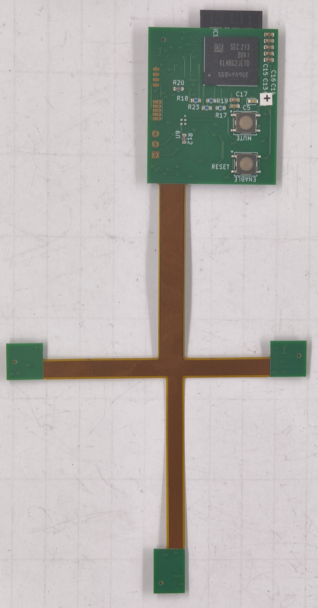
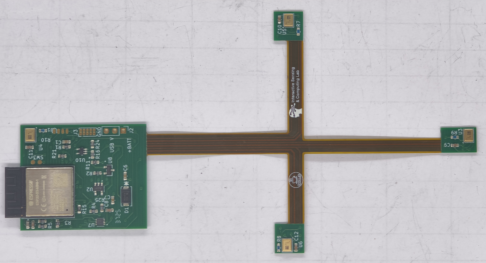
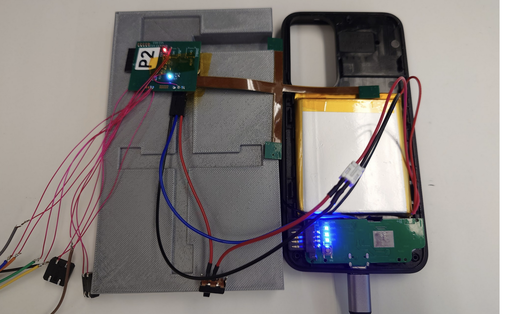

I am currently working on “Voxcapture” with the Computational Human Artificial Intelligence Lab run by Dr. Emily Mower Provost. This project is instrumenting phone cases to allow for personalized data collection for participants in a study on bipolar depression. Previously, the CHAI Lab relied on a phone app for their data collection which required complex negotiations with phone manufacturers. I designed a miniature device that can fit within a phone case and records using 4 microphones placed at different corners. This device had very strict physical design limitations. The controller and memory needed to fit in a confined space while simultaneously the mics needed to be placed as far apart as possible to minimize the chances that they were all occluded. I designed a rigid-flex PCB which encrypts the data before storing it. Once transmitted, the audio is run through a program to isolate the speech of only the participant.
In addition, I am working with the CHAI Lab to create a wristband version of this device. The ISC Lab has already done extensive work on sensing with Voice Pickup Units which collect all of their data from surface waves. This project uses the VPUs to identify when the wearer is speaking which activates a traditional microphone. The speaker identification process can therefore be moved to the edge device and eliminate the possibility of collecting bystander information. We plan to send this work to UIST 2026.